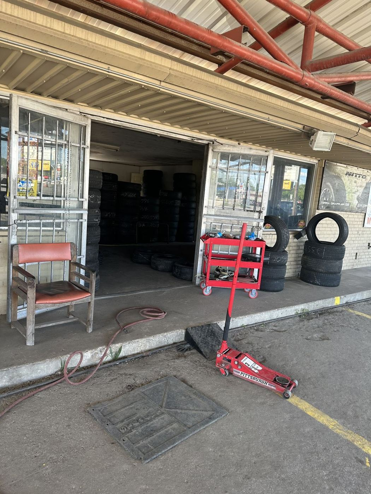

Honest work. Rolling fast.
Tires, alignment and front-end repair in Mexia, TX — 4.9★ from 24 Google reviews.
(254) 355-3006ServicesIn the shop
TiresNew and used sets, mounted and balanced.
Flat repairScrews and nails patched in 10–15 minutes.
AlignmentStop the uneven tread wear.
Front endFront-end work that drives like new.
Oil changesRegulars come back for years.
Mexia says
I really appreciate the kindness and honesty that everyone shows at E&A Tires. I know my car is in good hands!
Steven and his guys did a fantastic job on my front end, drives like a new car. Will definitely use their services again.
Prompt service and fair pricing. They have been doing my oil changes and tires for years now and I’m extremely happy with their service.